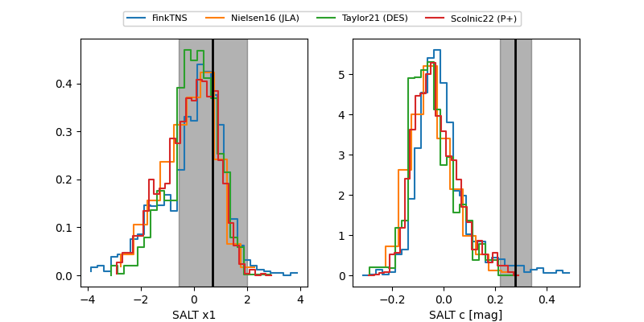

FINK: ZTF25abptfss
Lasair: ZTF25abptfss
ALeRCE: ZTF25abptfss
TNS: 2025xjm
YSE: 2025xjm
ZTF25abptfss (ztf,fink)
2025xjm (tns,yse)
ATLAS25lgy (atlas)
PS25hov (panstarrs)
equatorial (ra, dec) = (297.4287,-23.65954)
galactic (l, b) = (17.0578,-22.83294)

last ztfg=18.81, ztfr=18.90
9 ztfg, 14 ztfr detections